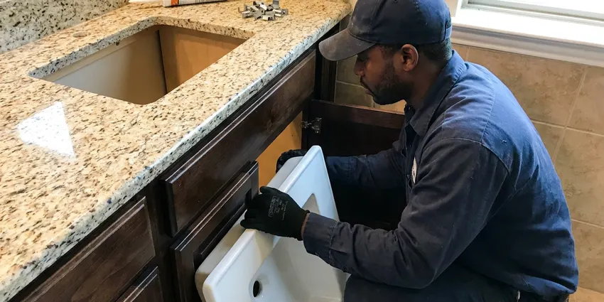

Shower Repair in North Richland Hills, TX
Facing shower issues in North Richland Hills, TX? DFJ Plumbing provides quick and reliable shower repair services to get your bathroom back in order.
- Fast, Local Plumbers
- Expert Diagnostic Services
- Upfront Pricing
- Licensed & Insured
Reliable Shower Fixes Available in North Richland Hills, TX.
Our team is standing by to assist you with any shower emergency or repair need.
Your Go-To for Shower Repair in North Richland Hills, TX
DFJ Plumbing specializes in all types of shower repair for homes across North Richland Hills, TX. Whether you're dealing with a leaky showerhead, a clogged drain, or fluctuating water temperatures, our skilled technicians have the tools and experience to diagnose and fix the problem efficiently.
Our expertise includes:
- Fixing leaky showerheads and valves
- Clearing stubborn shower drain clogs
- Repairing hot and cold water issues

Additional Bathroom Plumbing Services in North Richland Hills, TX
From toilets to showers, our bathroom plumbing team in North Richland Hills, TX handles repairs, installs, and upgrades with tidy, code-compliant work.


Customers
Why Choose DFJ Plumbing for Shower Repair in North Richland Hills, TX?
Our commitment to quality service and customer satisfaction is what sets us apart. We ensure every shower repair meets our high standards and your expectations.
- Local Expertise, Our team is familiar with North Richland Hills's plumbing infrastructure, including common issues like hard water scaling and shifting soil.
- Transparent Pricing, You will always receive a clear, upfront estimate before any work begins, with no hidden fees.
- Skilled Technicians, Our plumbers are licensed, insured, and continuously trained on the latest repair techniques and plumbing codes.
Citywide Coverage
DFJ Plumbing proudly serves every neighborhood in North Richland Hills, ensuring that expert shower repair is always just a phone call away. No matter where you are located within the city limits, our team is ready to provide prompt and professional service.
Experienced Team
Each technician at DFJ Plumbing is trained to handle a wide range of shower brands and models, ensuring a precise and effective repair every time. We understand the intricacies of different shower systems, guaranteeing a professional fix.
Safety-First Approach
Safety and code compliance are paramount in all our shower repair services. We ensure all work adheres to local North Richland Hills, TX plumbing codes, preventing future issues and protecting your home's value.
Trusted Certified North Richland Hills Plumbing Services Professionals
At DFJ Plumbing, we take pride in providing licensed, certified plumbing services throughout North Richland Hills, TX. Backed by leading industry credentials, our experienced plumbers combine technical skill with genuine customer care. Whether it is repair, installation, or maintenance, we follow strict safety and quality standards to deliver lasting results you can trust.
Call Us Now PHCC Plumbing Contractor Recognition
PHCC Plumbing Contractor Recognition Better Business Bureau (BBB) Accreditation
Better Business Bureau (BBB) Accreditation Angi Certified Pro
Angi Certified Pro ISO 9001 Quality Management Certification
ISO 9001 Quality Management CertificationReliable Shower Repair Services in North Richland Hills, TX
Leaky Shower Faucet Repair in North Richland Hills
A dripping shower faucet can waste hundreds of gallons of water a year and drive up your utility bill. Our plumbers quickly identify the source of the leak, which is often a worn-out O-ring, washer, or cartridge within the faucet assembly. We carry a wide range of replacement parts for common brands like Delta, Moen, Kohler, and Price Pfister, allowing for same-day repair. We'll ensure the new components are correctly installed, stopping the drip and saving you water.

Clogged Shower Drain Solutions in North Richland Hills, TX
Slow or standing water in your shower is a clear sign of a clogged drain. These clogs are typically caused by a buildup of hair, soap scum, and sometimes mineral deposits from Texas's hard water. Our team uses professional drain snakes and hydro-jetting equipment to safely and effectively clear even the most stubborn blockages without damaging your pipes. We also offer advice on preventative measures to keep your shower drains flowing freely.
Shower Valve Replacement in North Richland Hills
If you're experiencing inconsistent water temperature, low water pressure, or difficulty turning your shower on or off, the shower valve may be failing. A faulty mixing valve can lead to scalding or freezing water, which is a safety hazard. We can replace old or broken shower valves with new, reliable models, including pressure-balancing and thermostatic options for improved safety and comfort. This often involves accessing the valve behind the shower wall.
Hot Water Pressure Issues in North Richland Hills, TX
Lack of hot water or weak hot water pressure in your shower can be incredibly frustrating. This can stem from several issues, including a failing water heater, sediment buildup in the pipes, or a problem with the shower mixing valve itself. Our technicians will diagnose whether the issue is with your water heater, a blocked pipe, or a faulty component within the shower. We provide effective solutions to restore consistent hot water flow and pressure.
Showerhead Repair and Replacement in North Richland Hills
A malfunctioning showerhead can spray erratically, have reduced pressure, or even leak. Often, mineral deposits from North Richland Hills's water supply can clog the nozzles, or internal components can wear out. We can clean, repair, or replace your showerhead with a new, efficient model. We offer options from standard to rain showerheads, ensuring proper installation for optimal performance and water conservation.
Commercial Shower Repair in North Richland Hills, TX
For businesses in North Richland Hills, TX such as gyms, hotels, or apartment complexes, a broken shower can lead to lost revenue and unhappy customers. DFJ Plumbing provides prompt and efficient commercial shower repair services to minimize downtime. We understand the higher demands on commercial plumbing systems and use durable, commercial-grade parts to ensure long-lasting repairs, meeting local health and safety codes.
Emergency Shower Leak Repair in North Richland Hills
A severe shower leak can quickly cause extensive water damage to walls, floors, and ceilings. If you have a sudden, uncontrollable shower leak in your North Richland Hills home, don't wait. Our emergency plumbing team is available to respond quickly, locate the source of the leak, and perform immediate repairs to prevent further damage. We arrive with the necessary tools and parts to address urgent plumbing crises.

Tub and Shower Combination Repair in North Richland Hills, TX
Many homes in North Richland Hills, TX feature tub and shower combination units, which means their plumbing is interconnected. Issues like faulty diverter valves, shared drain clogs, or a leaky tub spout can affect the entire unit. Our plumbers are adept at diagnosing and repairing problems specific to these combination fixtures, ensuring both your tub and shower function perfectly. We handle all components, from the faucet to the overflow drain.
Shower Repair Near Me in North Richland Hills, TX
When you search for 'shower repair near me' in North Richland Hills, TX, you want a local company that understands your needs and can respond quickly. DFJ Plumbing is deeply rooted in the community, providing fast, reliable service right to your neighborhood.
Our plumbing technicians are always nearby, ready to address your shower repair concerns with speed and professionalism. We pride ourselves on being the trusted local choice for homeowners seeking expert plumbing assistance in North Richland Hills.
DFJ Plumbing at a Glance
- Licensed and insured plumbers serving North Richland Hills, TX
- 24/7 emergency service with same-day scheduling
- Clear written estimates, no hidden fees
- 4.9-star rated by 812+ Texas customers
North Richland Hills Map
North Richland Hills Information
- Population
- 70,658
- Area codes
- 817/940/682
- Service area
- North Richland Hills and communities within 40 miles
- Nearby
- Bedford, Euless, Fort Worth, Grapevine
For homes in North Richland Hills, TX, understanding your shower's plumbing is crucial, especially with Texas's variable water hardness and the potential for foundation movement to impact drain lines over time.
Expert Services
Trust our professionals for reliable DFJ Plumbing solutions in North Richland Hills, TX.
Our Specialized Plumbing Services in North Richland Hills, TX
At DFJ Plumbing, we provide a complete range of plumbing services across North Richland Hills, TX. From leak detection to full system installations, our team ensures fast, precise, and affordable service for both residential and commercial properties. Explore our core services below:


How Our Shower Repair Process Works in North Richland Hills, TX
At DFJ Plumbing, we make shower repair in North Richland Hills, TX straightforward and stress-free. Our process is designed for efficiency and transparency.
Request a Quote
Call (737) 405-5978 or fill out our online form to schedule an appointment. We'll gather initial details about your shower issue.
Diagnosis & Estimate
A licensed plumber will visit your North Richland Hills home to inspect the shower, diagnose the problem, and provide a clear, upfront repair estimate.
Expert Repair
Once approved, our technician will perform the necessary repairs using quality parts and ensuring all work meets local codes.
Frequently Asked Questions About Shower Repair in North Richland Hills
The cost of shower repair in North Richland Hills, TX varies widely depending on the issue. A simple O-ring replacement might cost between $100-$250, while a full shower valve replacement could range from $350-$800, including parts and labor. We provide a detailed estimate before any work begins.
Regular maintenance can help. Use a drain protector to catch hair, avoid harsh chemical drain cleaners, and clean your showerhead periodically to remove mineral buildup. For hard water in Texas, consider a whole-home water softener to protect all your plumbing fixtures.
Most common shower repairs, like fixing a leaky faucet or clearing a drain clog, can be completed within 1 to 3 hours. More complex issues, such as replacing a shower valve that requires wall access, might take half a day or longer. We aim for efficient service to minimize disruption.
Low shower water pressure can be caused by several factors, including mineral buildup in the showerhead, a faulty pressure balancing valve, sediment in your water heater, or even a leak in your water supply lines. Our plumbers can diagnose the exact cause and recommend the appropriate repair.
While some minor issues like a clogged showerhead might be DIY-friendly, most shower repairs, especially those involving water pressure, valve replacement, or significant leaks, are best left to a professional. Improper repair can lead to costly water damage or code violations. For homeowners in North Richland Hills, TX, it's safer to call DFJ Plumbing.
Minor repairs like replacing a showerhead or cartridge typically do not require a permit. However, extensive work such as relocating plumbing lines, replacing major sections of piping, or a full bathroom remodel might require one. DFJ Plumbing can advise you on permit requirements for your specific repair.
Key indicators include a dripping faucet, low water pressure, inconsistent water temperature, standing water in the shower, strange noises from the pipes, or visible leaks around the shower base. Addressing these signs early can prevent more extensive damage.
Yes, DFJ Plumbing stands behind our work. We offer a warranty on both parts and labor for all our shower repair services. Specific warranty details will be provided at the time of service, giving you peace of mind.
What People Are Saying About Our Plumbing Experts?

Daniel K.
A pipe burst at 11 pm and they actually answered. The plumber showed up within the hour, shut everything down, and had us back to normal the next morning. Could not ask for more.
Emergency Plumbing · North Richland Hills, TX
Mark T.
When our office needed drain cleaning, DFJ Plumbing provided quick, reliable service. The plumber arrived on time and made sure every drain flowed perfectly before leaving. Very satisfied.
Drain Cleaning · Grapevine, TX
Patricia H.
We had a slab leak that two other companies could not find. DFJ Plumbing located it in under an hour, explained our options, and the price matched the quote to the dollar.
Slab Leak Repair · Euless, TX
Robert G.
The trenchless sewer replacement saved our front yard. They walked us through the camera inspection footage first so we knew exactly what we were paying for.
Sewer Line Replacement · Euless, TXJames P.
Our commercial plumbing system had a leak under the sink, and DFJ Plumbing handled it professionally. The plumbers arrived quickly and restored everything without disruption to our customers.
Commercial Plumbing · Flower Mound, TX
Sofia M.
Two new toilets installed in one visit, no mess left behind, and the tech even adjusted a faucet he noticed was dripping. Fair pricing and really friendly.
Toilet Installation · Bedford, TX